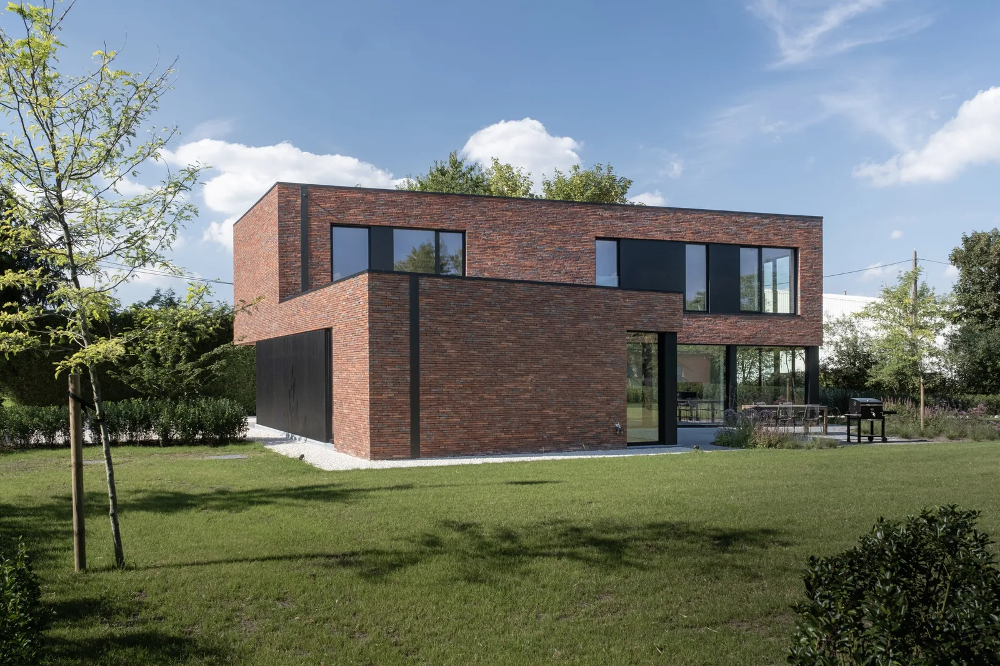

01 · Uitgelicht
Een villa in baksteen, Lier
Een eenvoudig, gesloten volume in rode baksteen, met een donker, terugliggend deel dat de inkom en de garage opneemt. Van op straat rustig, aan de tuinkant open.
Zoals bij elk project bleef het één aanspreekpunt, van de eerste schets tot de oplevering.
- Type
- Nieuwbouw, vrijstaande villa
- Plaats
- Lier
- Materialen
- Rode baksteen, donker gevelvolume